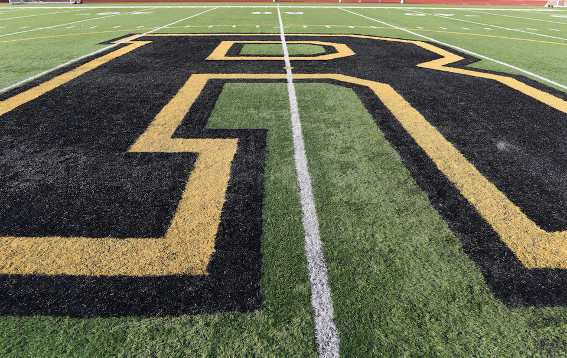

← Return to Volunteer Page

Time commitment 6 hours/month.
Participation will primarily be done individually at home, with some
business conducted in-person.
We are seeking 2 volunteers for this role.
Volunteers should have an interest in all athletics with basic knowledge of
types of statistics relevant to each sport.
Our History Committee is seeking volunteers dedicated to our school's history in athletics, including the history currently being made by
students today. Records from our last 100 years are spread out across many sources, and questions come up frequently that just need a bit
of research or knowledge on where to look. We are looking to recognize the legacy many of our alumni have left, as well as recognize when
the youth of today are accomplishing amazing feats.
Duties & Responsibilities
- Participate in ongoing research projects as requests come up.
- This could include finding scores from past games, keeping track of current seasons, identifying donated athletic
artifacts, or connecting with alumni who have first-hand knowledge of events.
- Attend all History Committee meetings - at least once per quarter.
- Meetings will typically take place after Board Meetings, or as needed when special projects arise.
- Connect with current RHS coaches to establish record sharing with the RHSAA.
- Work with the Athletic Hall of Fame Committee to share information two-ways as needed.
Interested in volunteering? Send an email to our History Committee at history@rooseveltalumni.org
with the subject line "Athletic History Researcher" to learn more.
We can't wait to have you join us!